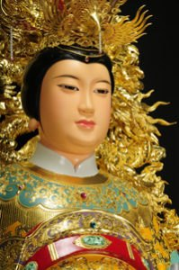

主神簡介Principal Deity
《主神，無極瑤池大聖西王金母大天尊》The Golden Mother of the Jasper Pool

瑤池金母，俗稱為西王母、王母娘娘、金母元君、西華金母、太靈九光龜台金母、九靈太妙龜山金母、金母娘娘、西漢夫人、西漢九光夫人、瑤池金母、瑤池金母大天尊、無極瑤池金母等，信徒尊稱母娘。按道經所載，其全名為「白玉龜台九靈太真金母元君」、「白玉龜台九鳳太真西王母」或「太靈九光龜台金母元君」。
在專述女仙仙傳的道教經典《墉城集仙錄》卷一中，言西王母乃「西華之至妙，洞陰之極尊」，其化生緣由，為「昔道氣凝寂，湛體無為，將欲啟迪玄功，生化萬物，先以東華至真之氣，化而生木公焉，木公生於碧海之上，蒼靈之虛，以生陽和之氣，理於東方，亦號曰王公焉；又以西華至妙之氣，化而生金母焉，金母生於神洲伊川，厥姓緱氏，生而飛翔，以主陰靈之氣理於西方，亦號王母。」
可見西王母是由化生萬物的西華至妙之氣所結氣成形，又云與東王木公共理二氣（東華至真、西華至妙）而養育天地、陶鈞萬物。
又《上清靈寶大法》言為西王母為「六極」之一。六極，猶六合也。六極各有一天帝統制，分別為：中宮紫微北極大帝，太上昊天玉皇大帝，后土皇地祇，東極青華太乙救苦天尊，南極長生大帝，白玉龜台九靈太真金母元君，稱為六天帝君，可見西王母神格之崇高。
近世或稱王母是玉帝之母的說法，係屬民間訛傳，經典中並無記載。
關於西王母形象的描述，《山海經》云西王母是半人半獸的神仙，人形、虎牙、豹尾，蓬頭散髮、身戴首飾，善長嘯，掌瘟疫及五刑殘殺之氣，居崑崙山洞穴之中。不過道經中卻提出不同的看法，如《墉城集仙錄》云《山海經》所述乃王母之使金方白虎之神，非王母之真形。至於王母的形象，則為「帶天真之策，佩金剛靈璽，黃錦之服，文彩明鮮，金光奕奕，腰分景之劍，結飛雲大授，頭上大華髻，載太真晨纓之冠，躡方瓊鳳文之覆，可年二十許，天姿掩靄，靈顏絕世，真靈人也。」其他仙傳、小說亦多言金母為二、三十歲左右，后妃打扮的婦女形象。
道經言元始天尊授西王母以萬天之統、龜山九光之籙，使制召萬靈，統括真聖，監盟證信，總諸天之羽儀，監上聖之考校。仙人得道昇天，需先拜木公、後謁金母，後始得昇九天入三清，拜太上覲奉元始天尊。又西王母為女仙之宗，以德配坤元，育養天地，統轄三界十方女神，乃女神至尊、女仙之首。天上天下、三界十方，女子得道登仙者，都隸屬於西王母管轄。仙傳又云金母「居崑崙之間，有城千里，玉樓十二，瓊華之闕，光碧之堂，九層元室，紫翠丹房，左帶瑤池，右環翠山。」相傳瑤池有桃樹，三千年一生實，而《漢武帝內傳》中亦載有西王母賜漢武帝三千年結果之蟠桃事，因此，西王母開蟠桃會的故事深入人心，如「群仙慶壽蟠桃會」、「瑤池會八仙慶壽」、「麻姑獻壽」等典故也一直為人所傳誦。道教和民間一直將西王母作為長壽的象徵，以西王母作為金籙延壽道場的主神。每逢西王母神誕之日，一說是三月初三日，一說是七月十八日，道教徒特別是女性教徒常聚集在道觀內，為西王母建祝誕道場，同時祈求健康長壽。
自從瑤池金母聖鸞降駕到花蓮縣吉安鄉之後，台灣瑤池金母的信仰就發展得相當快速，信徒遍佈全台，其信眾組織縝密，向心力都非常強，樹立親如兄弟姐妹的宗教團體典型，規律教義嚴整。每一個西王母的義子義女見面都以師兄、師姐稱呼，信仰瑤池金母的宮堂都以慈惠堂或者勝安宮、瑤池宮、王母宮等為宮名，在台灣將近有一千間的廟宇。
The Golden Mother of the Jasper Pool, also called Xiwangmu or Wangmu Niangniang, is lovingly called Mu Niang by her devotees. Taoist scriptures say that at the beginning of time the Lord King of the East and then the Golden Mother were born of the primal energies, and together they govern yin and yang and nurture all things.
She is the foremost of female immortals and presides over the goddesses of every realm. Legend places her palace by the Jasper Pool on Mount Kunlun, where the peaches of immortality ripen once in three thousand years. Her birthday is observed on the 3rd day of the 3rd lunar month or the 18th day of the 7th.
Since her manifestation in Ji'an, Hualien, her faith has spread to nearly a thousand temples in Taiwan, where devotees call one another brother and sister.
無極瑤池大聖西王金母寶誥 志心皈命禮Hymn of Praise to the Golden Mother
天地開泰 無極聖母 龍華勝會宴瑤池 萬靈統御傳教旨
諸仙獻壽 列聖稱觴 天威咫尺 功高德重
代□權衡 仙主道宗
三千侍女 奏笙簧之天樂
百歲蟠桃 開金碧之靈園
救眾生之苦難 灑甘露於塵寰
大悲大願 大聖大慈 無極瑤池大聖西王金母大天尊
註：「代□權衡，仙主道宗」空白處為（上「火言火」、下「火」字，音謝。）
線上點燈和法會報名Lamp & Ceremony Registration
點燈、法會可以線上報名，送出後帶繳費單到堂裡繳交現金。Register online, then bring your payment slip to the temple and pay in cash.